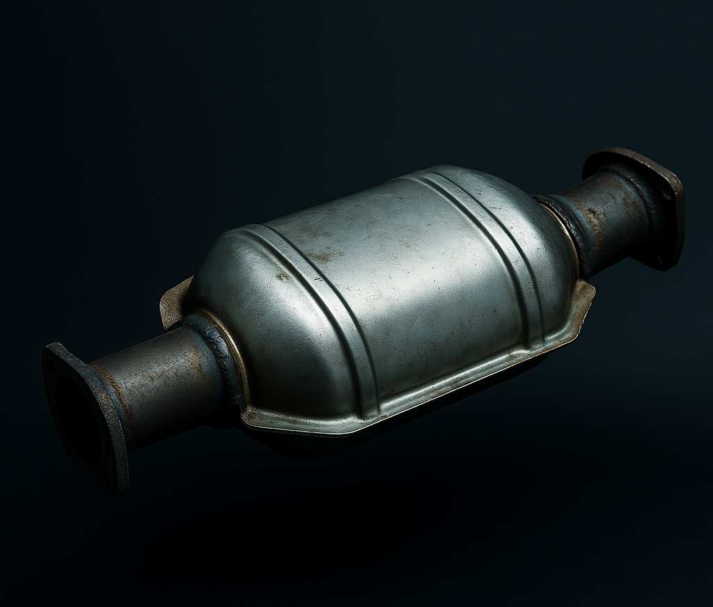

Exhaust System
The exhaust system’s job is simple — it takes all the burned gases created in the engine and pushes them safely out of the car. But it’s not just about cleanup — your exhaust system also affects performance, efficiency, and sound. When air flows better, your engine can “breathe” easier — meaning more horsepower and smoother acceleration. And of course, the exhaust system gives your car its signature tone — from quiet and smooth to loud and aggressive.
Exhaust Manifold

Collects exhaust gases from each cylinder and combines them into one pipe. It’s the first part of the exhaust system and helps push out the leftover gases after combustion.
Catalytic Converter
This is the car’s “clean-up” filter. It changes harmful gases like carbon monoxide into safer emissions before they leave the car. It’s super important for keeping things eco-friendly
Muffler

The muffler’s job is to control sound — it reduces the loud explosions coming from the engine. But car enthusiasts often replace it with performance or straight-pipe mufflers to make the car sound deeper, louder, and more aggressive
Exhaust Pipe & Tip

The pipe carries gases to the back of the car, and the exhaust tip is what you actually see. Tips don’t change performance much, but they add style — think chrome, burnt titanium, or carbon fiber ends